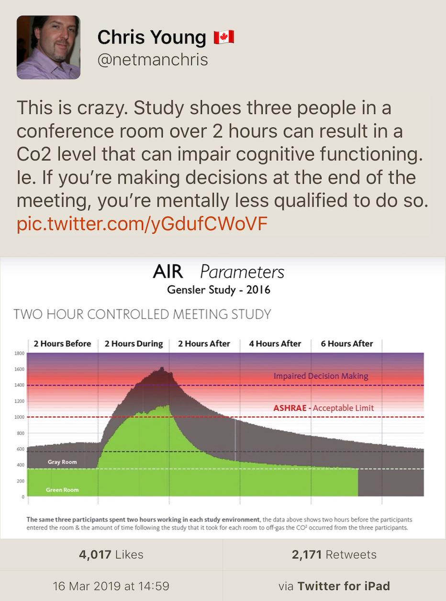

2019-04-25
How have you seen the embedded systems industry change over the last 20 years?
The ubiquity of embedded systems (in 2008!)
What would you say is the most difficult aspect of your work with C++?
Combining flexibility with performance is hard, especially when you have to remain backward compatible.
C++ had $5000 over 3 years of advertisement budget.
If you were starting off in the industry today, what would you want to invent, and why?
Better support for hard realtime constraints, reliability, concurrency. A combination of language and tools, compilation and execution techniques. Perhaps a subset of a general-purpose language, or a subset of C++ (1/10 in size).
Are there any aspects of C++ that you wish you could change?
Did you ever imagine that C++ would become so important?
Performance still matters.
Is there any reason for a competent programmer to use C when a C++ compiler of comparable quality is available for a target platform?
No.
What's your opinion on the embedded C++ subset?
What's next after C++?
C++ will be around as a major factor for another 20 years at least. Next generation (C++0x) will be finished in a couple of years. It will be a significant improvement.
Teaching, writing a book for beginners. Researching tools and techniques.
Work on C++0x will wind down over the next few years. (!!)
Which programming techniques and language features are the most important?
With C++ you combine different techniques and features to solve the problem. This will improve with C++0x.
With hard realtime constraints we shouldn't use free store or exceptions ("I'm very sad"), given the tools we have today.
https://www.reddit.com/r/cpp/comments/bfia2h/so_whats_exactly_wrong_with_c/
std::move not [[nodiscard]] in C++20?https://stackoverflow.com/questions/55772424/why-is-stdmove-not-nodiscard-in-c20

Greg Ferro:
An engineer who works remotely should be called an 'engifar'